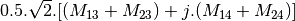

SAR processing¶
This section describes how to use the applications related to SAR processing.
Calibration¶
The application SarRadiometricCalibration can deal with the calibration of data from four radar sensors: RadarSat2, Sentinel1, COSMO-SkyMed and TerraSAR-X.
Examples:
If SARimg.tif is a TerraSAR-X or a COSMO-SkyMed image:
otbcli_SarRadiometricCalibration -in SARimg.tif
-out SARimg-calibrated.tif
If SARimg.tif is a RadarSat2 or a Sentinel1 image, it is possible to specify the look-up table (automatically found in the metadata provided with such image):
otbcli_SarRadiometricCalibration -in SARimg.tif
-lut gamma
-out SARimg-calibrated.tif
For TerraSAR-X (and soon for RadarSat2 and Sentinel1), it is also possible to use a noise LUT to derive calibrated noise profiles:
otbcli_SarRadiometricCalibration -in SARimg.tif
-lut gamma -noise 1
-out SARimg-calibrated.tif
Despeckle¶
SAR images are generally corrupted by speckle noise. To suppress speckle and improve the radar image analysis lots of filtering techniques have been proposed. The module implements to well-known despeckle methods: Frost, Lee, Gamma-MAP and Kuan.
Figure ([ffig:S1VVdespeckledextract] shows an extract of a SLC Sentinel1 image, band VV, taken over Cape Verde and the result of the Gamma filter. The following commands were used to produce the despeckled extract:
First, the original image is converted into an intensity one (real part corresponds to band 1, and imaginary part to band 2):
otbcli_BandMath -il S1-VV-extract.tif
-exp im1b1^2+im1b2^2
-out S1-VV-extract-int.tif
Then the intensity image is despeckled with the Gamma-MAP filter:
otbcli_Despeckle -in S1-VV-extract-int.tif
-filter.gammamap.rad 5
-filter.gammamap.nblooks 1
-out S1-VV-despeckled-extract.tif
The produced images were then rescaled to intensities ranging from 0 to 255 in order to be displayed.
Polarimetry¶
In conventional imaging radar, the measurement is a scalar which is proportional to the received back-scattered power at a particular combination of linear polarization (HH, HV, VH or VV). Polarimetry is the measurement and interpretation of the polarization of this measurement. It allows for the measurement of various optical properties of a material. In polarimetry the basic measurement is a complex scattering matrix yielding an eight dimensional measurement space (Sinclair matrix). For reciprocal targets where , this space is compressed to five dimensions: three amplitudes (, , and ); and two phase measurements, (co-pol: HH-VV, and cross-pol: HH-HV). (see grss-ieee).
Matrix conversions¶
This applications allows converting classical polarimetric matrices to each other. For instance, it is possible to get the coherency matrix from the Sinclair one, or the Mueller matrix from the coherency one. The figure below ([fig:polconv]) shows the workflow used in this application.
The filters used in this application never handle matrices, but images where each band is related to their elements. As most of the time SAR polarimetry handles symmetric matrices, only the relevant elements are stored, so that the images representing them have a minimal number of bands. For instance, the coherency matrix size is 3x3 in the monostatic case, and 4x4 in the bistatic case: it will thus be stored in a 6-band or a 10-band complex image (the diagonal and the upper elements of the matrix).
The Sinclair matrix is a special case: it is always represented as 3 or 4 one-band complex images (for mono- or bistatic case).
There are 13 available conversions, each one being related to the following parameters:
- msinclairtocoherency
- msinclairtocovariance
- msinclairtocircovariance
- mcoherencytomueller
- mcovariancetocoherencydegree
- mcovariancetocoherency
- mlinearcovariancetocircularcovariance
- muellertomcovariance
- bsinclairtocoherency
- bsinclairtocovariance
- bsinclairtocircovariance
- sinclairtomueller
- muellertopoldegandpower
For each option parameter, the list below gives the formula used.
— Monostatic case —
msinclairtocoherency (SinclairToReciprocalCoherencyMatrixFunctor)
msinclairtocovariance (SinclairToReciprocalCovarianceMatrixFunctor)
msinclairtocircovariance (SinclairToReciprocalCircularCovarianceMatrixFunctor)
With:
mcoherencytomueller (ReciprocalCoherencyToReciprocalMuellerFunctor)
With:
Where are related to the elements of the reciprocal coherence matrix.
mcovariancetocoherencydegree (ReciprocalCovarianceToCoherencyDegreeFunctor)
mcovariancetocoherency (ReciprocalCovarianceToReciprocalCoherencyFunctor)
Where are related to the elements of the reciprocal linear covariance matrix.
mlinearcovariancetocircularcovariance (ReciprocalLinearCovarianceToReciprocalCircularCovarianceFunctor)
Where are related to the elements of the reciprocal linear covariance matrix.
muellertomcovariance (MuellerToReciprocalCovarianceFunctor)
- 

— Bistatic case —
bsinclairtocoherency (SinclairToCoherencyMatrixFunctor)
bsinclairtocovariance (SinclairToCovarianceMatrixFunctor)
bsinclairtocircovariance (SinclairToCircularCovarianceMatrixFunctor)
With:
— Both cases —
sinclairtomueller (SinclairToMueller)
With:
muellertopoldegandpower (MuellerToPolarisationDegreeAndPowerFunctor)


Examples:
otbcli_SARPolarMatrixConvert -inhh imageryC_HH.tif -inhv imageryC_HV.tif -invv imageryC_VV.tif -conv msinclairtocoherency -outc coherency.tif
otbcli_SARPolarMatrixConvert -inhh imageryC_HH.tif -inhv imageryC_HV.tif -invv imageryC_VV.tif -conv msinclairtocovariance -outc covariance.tif
otbcli_SARPolarMatrixConvert -inhh imageryC_HH.tif -inhv imageryC_HV.tif -invv imageryC_VV.tif -conv msinclairtocircovariance -outc circ_covariance.tif
otbcli_SARPolarMatrixConvert -inc coherency.tif -conv mcoherencytomueller -outf mueller.tif
otbcli_SARPolarMatrixConvert -inc covariance.tif -conv mcovariancetocoherencydegree -outc coherency_degree.tif
otbcli_SARPolarMatrixConvert -inc covariance.tif -conv mcovariancetocoherency -outc coherency.tif
otbcli_SARPolarMatrixConvert -inc covariance.tif -conv mlinearcovariancetocircularcovariance -outc circ_covariance.tif
otbcli_SARPolarMatrixConvert -inf mueller.tif -conv muellertomcovariance -outc covariance.tif
otbcli_SARPolarMatrixConvert -inhh imageryC_HH.tif -inhv imageryC_HV.tif -invh imageryC_VH.tif -invv imageryC_VV.tif -conv bsinclairtocoherency -outc bcoherency.tif
otbcli_SARPolarMatrixConvert -inhh imageryC_HH.tif -inhv imageryC_HV.tif -invh imageryC_VH.tif -invv imageryC_VV.tif -conv bsinclairtocovariance -outc bcovariance.tif
otbcli_SARPolarMatrixConvert -inhh imageryC_HH.tif -inhv imageryC_HV.tif -invh imageryC_VH.tif -invv imageryC_VV.tif -conv bsinclairtocircovariance -outc circ_bcovariance.tif
otbcli_SARPolarMatrixConvert -inhh imageryC_HH.tif -inhv imageryC_HV.tif -invh imageryC_VH.tif -invv imageryC_VV.tif -conv sinclairtomueller -outf mueller.tif
otbcli_SARPolarMatrixConvert -inf mueller.tif -conv muellertopoldegandpower -outf degreepower.tif
Polarimetric decompositions¶
From one-band complex images (HH, HV, VH, VV), returns the selected decomposition. The H-alpha-A decomposition is currently the only one available; it is implemented for the monostatic case (transmitter and receiver are co-located). User must provide three one-band complex images HH, HV or VH, and VV (HV = VH in monostatic case). The H-alpha-A decomposition consists in averaging 3x3 complex coherency matrices (incoherent analysis): The user must provide the size of the averaging window, thanks to the parameter inco.kernelsize. The applications returns a float vector image, made of three channels: H(entropy), Alpha, A(Anisotropy).
Here are the formula used (refer to the previous section about how the coherence matrix is obtained from the Sinclair one):
![entropy = -\sum_{i=0}^{2} \frac{p[i].\log{p[i]}}{\log{3}}](../_images/math/52468808896d36e0539e0bb8d79504bce5733e9d.png)
Where:
![p[i] = max(SortedEigenValues[i], 0) / \sum_{i=0}^{2, SortedEigenValues[i]>0} SortedEigenValues[i]](../_images/math/1cc8e351e2d2aa3a5556f6fb5c19a1e5841d6cd3.png)
Example:
We first extract a ROI from the original image (not required). Here imagery_HH.tif represents the element HH of the Sinclair matrix (and so forth).
otbcli_ExtractROI -in imagery_HH.tif -out imagery_HH_extract.tif -startx 0 -starty 0 -sizex 1000 -sizey 1000
otbcli_ExtractROI -in imagery_HV.tif -out imagery_HV_extract.tif -startx 0 -starty 0 -sizex 1000 -sizey 1000
otbcli_ExtractROI -in imagery_VV.tif -out imagery_VV_extract.tif -startx 0 -starty 0 -sizex 1000 -sizey 1000
Next we apply the H-alpha-A decomposition:
otbcli_SARDecompositions -inhh imagery_HH_extract.tif
-inhv imagery_HV_extract.tif
-invv imagery_VV_extract.tif
-decomp haa -inco.kernelsize 5
-out haa_extract.tif
The result has three bands: entropy (0..1) - alpha (0..90) - anisotropy (0..1). It is split into 3 mono-band images thanks to following command:
otbcli_SplitImage -in haa_extract.tif -out haa_extract_splitted.tif
Each image is then colored thanks to a color look-up table ’hot’. Notice how minimum and maximum values are provided for each polarimetric variable.
otbcli_ColorMapping -in haa_extract_splitted_0.tif -method continuous -method.continuous.lut hot -method.continuous.min 0 -method.continuous.max 1 -out entropy_hot.tif uint8
otbcli_ColorMapping -in haa_extract_splitted_1.tif -method continuous -method.continuous.lut hot -method.continuous.min 0 -method.continuous.max 90 -out alpha_hot.tif uint8
otbcli_ColorMapping -in haa_extract_splitted_2.tif -method continuous -method.continuous.lut hot -method.continuous.min 0 -method.continuous.max 1 -out anisotropy_hot.tif uint8
The results are shown in the figures below ([fig:entropyimage] , [fig:alphaimage] and [fig:anisotropyimage]).
Polarimetric synthetis¶
This application gives, for each pixel, the power that would have been received by a SAR system with a basis different from the classical (H,V) one (polarimetric synthetis). The new basis are indicated through two Jones vectors, defined by the user thanks to orientation (psi) and ellipticity (khi) parameters. These parameters are namely psii, khii, psir and khir. The suffixes (i) and (r) refer to the transmitting antenna and the receiving antenna respectively. Orientations and ellipticity are given in degrees, and are between -90/90 degrees and -45/45 degrees respectively.
Four polarization architectures can be processed:
- HH_HV_VH_VV: full polarization, general bistatic case.
- HH_HV_VV or HH_VH_VV: full polarization, monostatic case (transmitter and receiver are co-located).
- HH_HV: dual polarization.
- VH_VV: dual polarization.
The application takes a complex vector image as input, where each band correspond to a particular emission/reception polarization scheme. User must comply with the band order given above, since the bands are used to build the Sinclair matrix.
In order to determine the architecture, the application first relies on the number of bands of the input image.
- Architecture HH_HV_VH_VV is the only one with four bands, there is no possible confusion.
- Concerning HH_HV_VV and HH_VH_VV architectures, both correspond to a three channels image. But they are processed in the same way, as the Sinclair matrix is symmetric in the monostatic case.
- Finally, the two last architectures (dual-polarization), can’t be distinguished only by the number of bands of the input image. User must then use the parameters emissionh and emissionv to indicate the architecture of the system: emissionh=1 and emissionv=0 for HH_HV, emissionh=0 and emissionv=1 for VH_VV.
Note: if the architecture is HH_HV, khii and psii are automatically set to 0/0 degrees; if the architecture is VH_VV, khii and psii are automatically set to 0/90 degrees.
It is also possible to force the calculation to co-polar or cross-polar modes. In the co-polar case, values for psir and khir will be ignored and forced to psii and khii; same as the cross-polar mode, where khir and psir will be forced to psii + 90 degrees and -khii.
Finally, the result of the polarimetric synthesis is expressed in the power domain, through a one-band scalar image.
The final formula is thus: , where A ans B are two Jones vectors and S is a Sinclair matrix.
The two figures below ([fig:polsynthll] and [fig:polsynthlr]) show the two images obtained with the basis LL and LR (L for left circular polarization and R for right polarization), from a Radarsat-2 image taken over Vancouver, Canada. Once the four two-band images imagery_HH imagery_HV imagery_VH imagery_VV were merged into a single four complex band image imageryC_HH_HV_VH_VV.tif, the following commands were used to produce the LL and LR images:
otbcli_SARPolarSynth -in imageryC_HH_HV_VH_VV.tif
-psii 0 -khii 45 -mode co
-out test-LL.tif
otbcli_SARPolarSynth -in imageryC_HH_HV_VH_VV.tif
-psii 0 -khii 45 -mode cross
-out test-LR.tif
The produced images were then rescaled to intensities ranging from 0 to 255 in order to be displayed.

Polarimetric data visualization¶
Finally, let’s talk about polarimetric data visualization. There is a strong link between polarimetric data visualization and the way they can be decomposed into significant physical processes. Indeed, by setting the results (or combinations) of such decompositions to RGB channels that help in interpreting SAR polarimetric images.
There is no specific dedicated application yet, but it is possible to use a combination of different applications as a replacement. Let’s do it with a RADARSAT-2 acquisition over the famous place of the Golden Gate Bridge, San Francisco, California.
We first make an extract from the original image (not mandatory).
otbcli_ExtractROI -in imagery_HH.tif -out imagery_HH_extract.tif -startx 0 -starty 6300 -sizex 2790 -sizey 2400
otbcli_ExtractROI -in imagery_HV.tif -out imagery_HV_extract.tif -startx 0 -starty 6300 -sizex 2790 -sizey 2400
otbcli_ExtractROI -in imagery_VV.tif -out imagery_VV_extract.tif -startx 0 -starty 6300 -sizex 2790 -sizey 2400
Then we compute the amplitude of each band using the BandMath application:
otbcli_BandMath -il imagery_HH_extract.tif -out HH.tif -exp "sqrt(im1b1^2+im1b2^2)"
otbcli_BandMath -il imagery_HV_extract.tif -out HV.tif -exp "sqrt(im1b1^2+im1b2^2)"
otbcli_BandMath -il imagery_VV_extract.tif -out VV.tif -exp "sqrt(im1b1^2+im1b2^2)"
Note that BandMath application interprets the image ’imagery_XX_extract.tif’ as an image made of two bands, where the first one is related to the real part of the signal, and where the second one is related to the imaginary part (that’s why the modulus is obtained by the expressions ).
Then, we rescale the produced images to intensities ranging from 0 to 255:
otbcli_Rescale -in HH.tif -out HH_res.png uint8
otbcli_Rescale -in HV.tif -out HV_res.png uint8
otbcli_Rescale -in VV.tif -out VV_res.png uint8
Figures below ([fig:hhfrisco] , [fig:hvfrisco] and [fig:vvfrisco]) show the images obtained:
Now the most interesting step. In order to get a friendly coloration of these data, we are going to use the Pauli decomposition, defined as follows:
We use the BandMath application again:
otbcli_BandMath -il imagery_HH_extract.tif imagery_HV_extract.tif imagery_VV_extract.tif -out Channel1.tif -exp "sqrt(((im1b1-im3b1)^2+(im1b2-im3b2)^2))"
otbcli_BandMath -il imagery_HH_extract.tif imagery_HV_extract.tif imagery_VV_extract.tif -out Channel2.tif -exp "sqrt(im2b1^2+im2b2^2)"
otbcli_BandMath -il imagery_HH_extract.tif imagery_HV_extract.tif imagery_VV_extract.tif -out Channel3.tif -exp "sqrt(((im1b1+im3b1)^2+(im1b2+im3b2)^2))"
Note that sqrt(2) factors have been omitted purposely, since their effects will be canceled by the rescaling step. Then, we rescale the produced images to intensities ranging from 0 to 255:
otbcli_Rescale -in Channel1.tif -out Channel1_res.tif uint8
otbcli_Rescale -in Channel2.tif -out Channel2_res.tif uint8
otbcli_Rescale -in Channel3.tif -out Channel3_res.tif uint8
And finally, we merge the three bands into a single RGB image.
otbcli_ConcatenateImages -il Channel1_res.tif Channel2_res.tif Channel3_res.tif
-out visuPauli.png
The result is shown in the figure below ([fig:colorfrisco]).